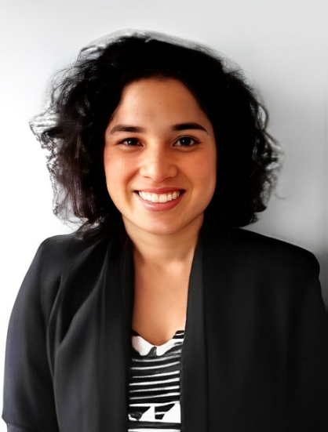

FUNDACREDESA
Somos la Fundación Centro de Estudios sobre Crecimiento y Desarrollo de la Población Venezolana (FUNDACREDESA) es un ente adscrito al Ministerios del Poder Poder Popular para las Comunas, los Movimientos Sociales y la Agricultura Urbana. Esta institución, fundada el 13 de julio de 1976 gracias a la vision del Dr. Hernán Méndez Castellano, ha orientado su acción a la investigación de las condiciones biomédicas y sociales de la población venezolana, con miras a generar indicadores en salud pública.
Desde su creación, FUNDACREDESA se ha trazado como objetivo obtener y presentar la más precisa descripción de las características biomédicas y sociales de la población de ninos, niñas y adolescentes venezolanos a partir de los datos levantados en el "Estudio Nacional de Crecimiento y Desarrollo Humanos de la República de Venezuela" (1981-1986) y, actualmente, la institución se encuentra en la etapa final del análisis de los datos del "Segundo Estudio Nacional de Crecimiento y Desarrollo Humano de la República Bolivariana de Venezuela".

Isis Ochoa
Presidenta de FUNDACREDESA
"Nuestra misión en FUNDACREDESA es profundizar la investigación científica en las comunidades venezolanas, entendiendo el crecimiento y desarrollo humano como un pilar fundamental para la planificación del Estado y el diseño de políticas públicas soberanas y eficientes. Seguiremos consolidando la ciencia al servicio del pueblo."
Nuestra Trayectoria Científica
Reproduce este audiovisual para conocer a fondo la labor analítica, demográfica y social que nuestro equipo de especialistas lleva a cabo diariamente por el futuro de Venezuela.
Misión Institucional
Generar propuestas nacionales de investigación sobre el desarrollo fisico, psicológico y social de la población venezolana, que permita el diseño de políticas públicas y el desarrollo de avances científicos, académicos en correspondencia al Plan de Desarrollo Económico y Social de la Nación.
Visión Institucional
Ser un líder en las investigaciones de la poblaciones humanas en su aspecto biológico, social y cultural; capaz de aportar información para el diseño de políticas públicas y programas sociales que mejore las condiciones de vida y el bienestar de la población venezolana en sintonía con los lineamientos del desarrollo nacional.
¿Qué hacemos?
Realizamos estudios multidisciplinarios con el propósito de obtener patrones de referencias nacionales en materia de crecimiento y desarrollo humano, así como generar información clave para el diseño de políticas públicas y programas orientados a mejorar las condiciones de vida de la población.
Nuestra Historia
Arrastra horizontalmente o usa la rueda del ratón para explorar los hitos históricos de FUNDACREDESA desde 1976
Creación de la Fundación

FUNDACREDESA fue fundada gracias a la visión del Dr. Hernán Méndez Castellano, con el propósito inicial de entender de manera profunda las condiciones biomédicas, psicosociales y fisiológicas de los ciudadanos venezolanos.
Manual de Procedimientos

Herramientas clave para las investigaciones del Estudio Nacional de Crecimiento y Desarrollo Humano, que incluye los marcos conceptuales de Familia, Nutrición, Antropometría, Odontología, Desarrollo Psicológico y Bioquímica.
Estudio Nacional (Carabobo)

El estudio piloto de Carabobo duró 5 meses con una muestra de 4.800 personas, sirviendo como prueba de confiabilidad y validación metodológica del "Proyecto Venezuela" impulsado por el Conicit.
Estudio Nacional (Zulia)

Una referencia significativa sobre el estado más poblado del país, evaluando antropometría, maduración ósea y glándula tiroides, consolidando el marco de referencia en las investigaciones nacionales.
El Proceso Educativo
Investigación en torno a la Familia en el "Proyecto Venezuela". Se aplicó la metodología de variables múltiples adaptando el modelo europeo del Prof. Graffar a la realidad demográfica venezolana.
Tendencias de Consumo
Estudio del consumo alimentario en Caracas, Falcón y Trujillo. Puntualizó la vigencia de los estudios antropométricos y sirvió de base a la planificación general demográfica y social.
SENACREDH y el Futuro
La institución se encuentra utilizando herramientas tecnológicas avanzadas para culminar el Segundo Estudio Nacional (SENACREDH) y actualizar todos los indicadores demográficos y de desarrollo del país.